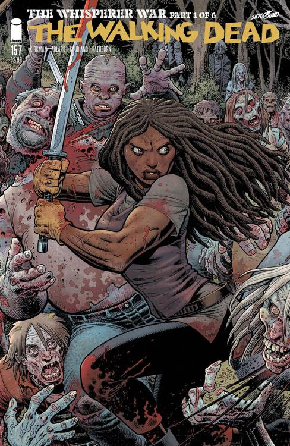

Michonne é introduzida na terceira temporada de "The Walking Dead" como uma guerreira solitária empunhando uma katana. Interpretada por Danai Gurira, ela rapidamente se torna uma das personagens mais icônicas da série. Michonne é uma sobrevivente forte, inteligente e ferozmente leal, com um passado trágico envolvendo a perda de seu filho e de seu companheiro. Ela começa como uma figura misteriosa, mas eventualmente se junta ao grupo de Rick Grimes e se torna uma das líderes mais importantes, desenvolvendo uma relação próxima com Rick e servindo como uma mãe para Carl e Judith. Sua habilidade com a katana e seu instinto de sobrevivência a tornam uma das personagens mais formidáveis do universo de "The Walking Dead".
Nos quadrinhos, Michonne aparece pela primeira vez em "The Walking Dead" #19 e, como na série, é apresentada como uma sobrevivente solitária que carrega uma katana. Sua história de fundo é similar, com a perda de sua família sendo uma grande influência em sua personalidade. Michonne se torna uma figura crucial no grupo de Rick e desenvolve relacionamentos significativos com outros personagens, incluindo Tyreese, com quem ela tem um relacionamento romântico nos quadrinhos (diferente da série). Ela também passa por experiências traumáticas, incluindo um período em que é capturada e abusada pelo Governador, uma parte de sua história que a série adaptou de forma mais suave.
As principais diferenças entre Michonne na série de TV e nos quadrinhos incluem seus relacionamentos e algumas nuances em sua personalidade. Na série, Michonne desenvolve um relacionamento romântico com Rick Grimes, algo que não ocorre nos quadrinhos. Além disso, a série expande muito mais seu papel como líder e mãe substituta, especialmente após a saída de Rick da série. Nos quadrinhos, Michonne tem uma conexão mais forte com Tyreese e Ezekiel, e sua jornada emocional é explorada de forma um pouco diferente, com mais foco em seu lado vulnerável e suas lutas internas.
A Michonne está na série derivada focada nela e Rick Grimes, no dia 25 de fevereiro de 2024 o spin-off The Ones Who Live conta uma história icrível e com um direção excelenete. A minissérie acompanha o retorno de Rick Grimes e da Michonne ao reencontro de seus amigos e família enquanto tentam fugir de uma comunidade enorme e opressora. Atualmente você pode assistir essa série na Prime Video. Nota do IMDb.